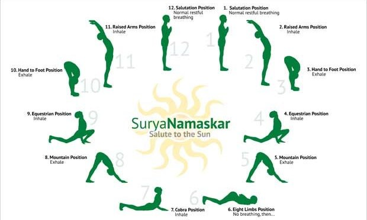
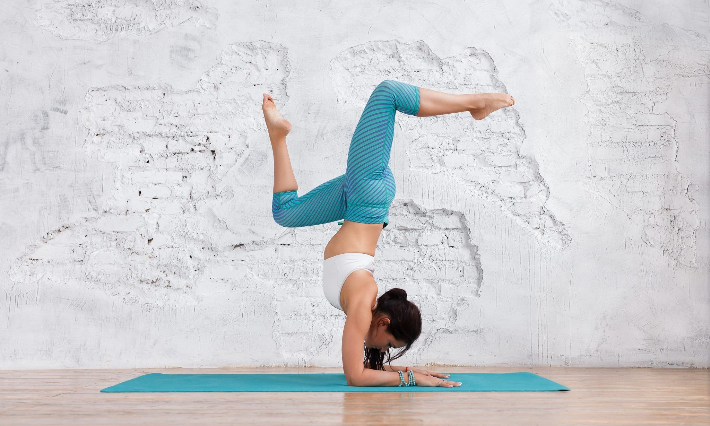

-
Circuit Cardio
Кружни тренинг је облик кондиционирања или тренинга издржљивости или тренинга отпорности помоћу аеробика високог интензитета. Циљана је на изградњу снаге и мишићну издржљивост. "Круг" вежбе је један завршетак свих задатих вежби у програму. Када је један круг довршен, особа поново започиње прву вежбу за следећи круг. Традиционално време између вежби у тренингу кругова је кратко, често са брзим преласком на следећу вежбу.  -
HIIT Cardio
Интервални тренинг високог интензитета (ХИИТ), такође назван интермитентним вежбањем високог интензитета (ХИИЕ) или тренингом спринтерског интервала (СИТ), облик је интервалног тренинга, кардиоваскуларне стратегије вежби наизменичног кратког периода интензивне анаеробне вежбе са мање интензивних периода опоравка , док се превише исцрпи да би се наставило. Иако не постоји универзално трајање ХИИТ сесије, ови интензивни тренинзи обично трају испод 30 минута, са временима која се разликују у зависности од тренутног нивоа кондиције учесника. Трајање ХИИТ-а такође зависи од интензитета сесије. -
Fartlek
Фартлек, што на шведском значи "брзинска игра", је континуирани тренинг са интервалним тренинзима. Фартлек трке су врло једноставан облик трчања на велике даљине. Фартлек-ов тренинг "једноставно је дефинисан као периоди брзог трчања који се мешају са периодима споријег трчања." За неке људе то би могао бити спој трчања и спринтања, али за почетнике би то могао бити ходање са додавањем делова за јоггинг, када је то могуће. пример онога што би тркач урадио за време фартлек трчања је „спринтајте све од једног лаког пола до другог, трчите до угла, дајте средњи напор за пар блокова, трчите између четири светлосна пола и спринтајте до знака заустављања и тако даље, за постављено укупно време или удаљеност. " Променљиви интензитет и непрекидна природа вежбе стављају стрес и на аеробни и на анаеробни систем. Од традиционалног интервалног тренинга разликује се по томе што је неструктуриран; интензитет и / или брзина варирају, како спортиста жели. Тренинг Фартлек-а углавном је повезан са трчањем, али може укључивати готово било коју врсту вежбе.